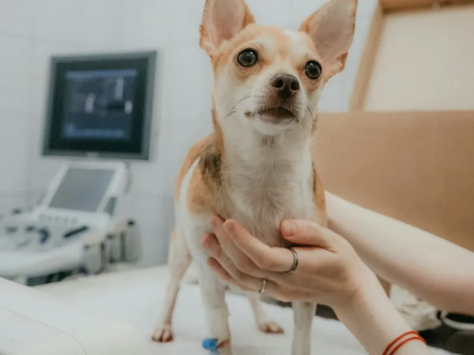
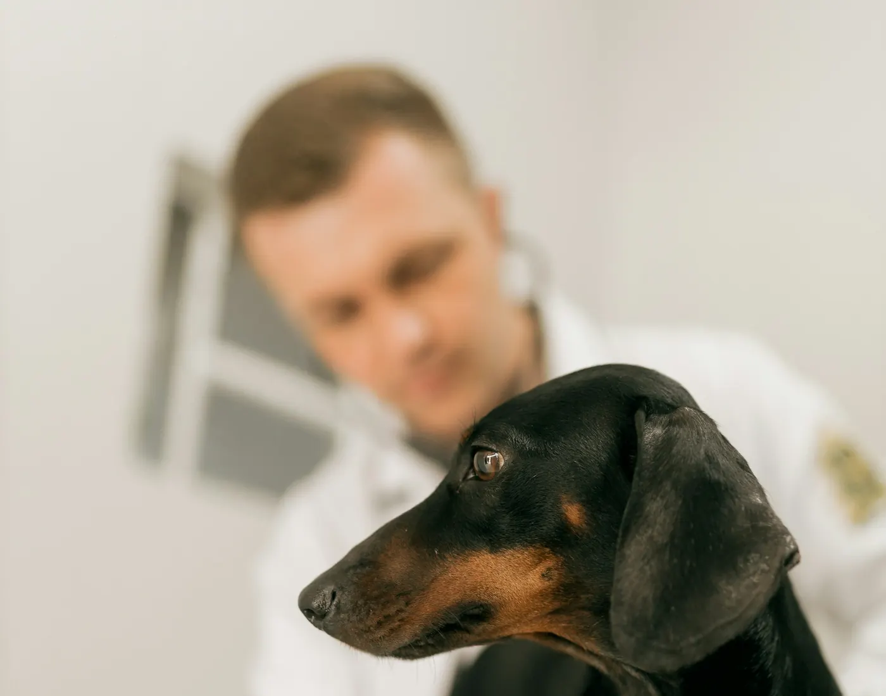
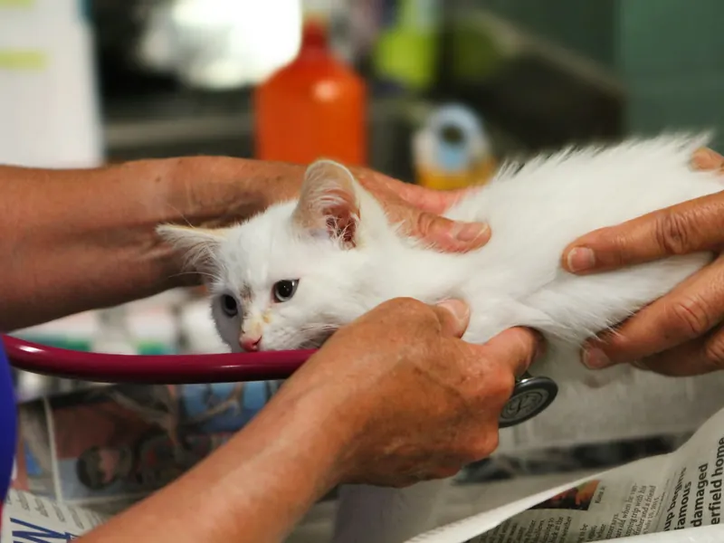
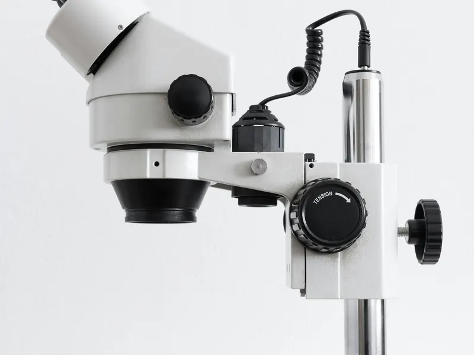
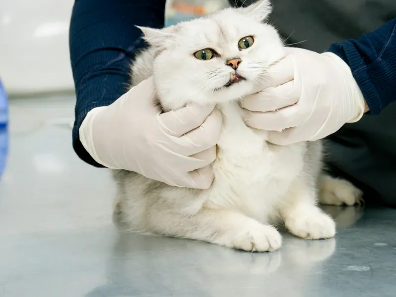
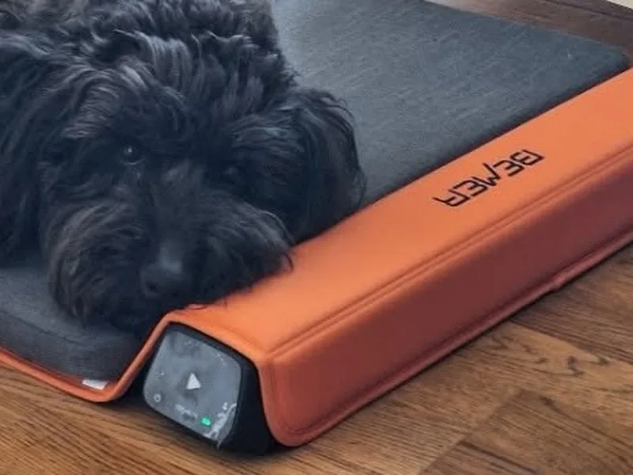
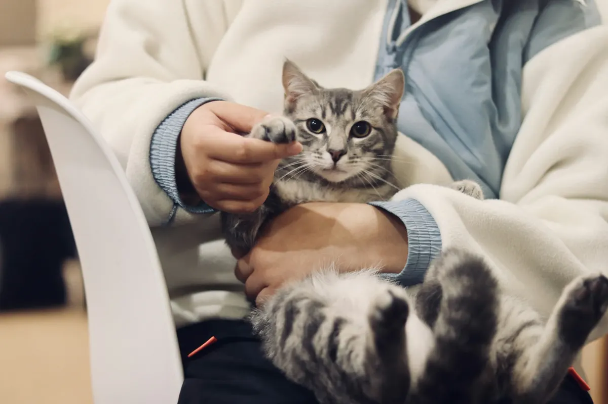
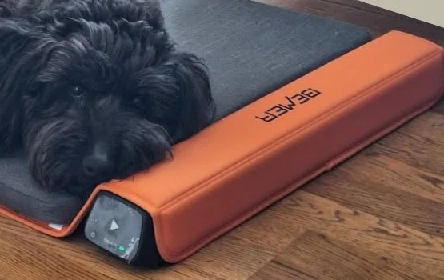

Vizsgálat és kezelés
Alapos vizsgálat, és a doktor úr részletesen elmagyarázza, mit talált és mi a következő lépés.
Dr. Aradi Miklós rendelője a Németh László utcában: vizsgálat és kezelés, laborvizsgálat, chip, útlevél és BEMER-terápia. A gazdik szerint sürgős esetben is fogad, amint tud.

Válassza ki, miért keresne minket, és megmutatjuk, mi a teendő, kit hívjon, és mire készüljön.
Válasszon egyet:
Akut esetben a doktor úr időpont nélkül is fogadja kedvencét, amint tudja. Ezt írják a gazdik is egy baleset ért cicáról: „azonnal fogadott minket”.
Teljes körű állatorvosi ellátás egy helyen, a Németh László utcában.

Alapos vizsgálat, és a doktor úr részletesen elmagyarázza, mit talált és mi a következő lépés.

Baleset vagy hirtelen rosszullét esetén hívjon, és kedvencét amint lehet, fogadjuk.

Jól felszerelt rendelő, helyben elérhető laborvizsgálatokkal. A Szívférgesség Napján, 2025 májusában ingyenes szűrést tartottunk kutyáknak.

Gyors, egyszeri beavatkozás, amellyel elveszett kedvence visszatalálhat Önhöz.
Utazik kedvencével? Az állatútlevelet a rendelőben kiállítjuk. Jelentkezzen időben, mert chip és érvényes veszettség elleni oltás is kell hozzá.

Fizikai érterápia idős kutyáknak és cicáknak, az ízületek és a szervek kiegyensúlyozott működéséért.
A terápiáról bővebben
Dr. Aradi Miklós állatorvos rendelője Pécsen, a Németh László u. 1. alatt. Akik már jártak nálunk, ezt emelik ki:

Készítse fel idős kutyáját és cicáját a téli hidegre. A BEMER fizikai érterápia a mikrokeringés támogatásával segíti az ízületek és a létfontosságú szervek kiegyensúlyozott működését. Ajánljuk:
Kis- és közepes testű kutyáknak díjmentes próbát és konzultációt is biztosítunk. Időpont Szajcsán Évánál foglalható.
Három vélemény szó szerint a Google-ról.
„A cicával türelmesen bántak minden egyes alkalommal és nagyon részletesen elmagyaráz a Doktor úr mindent. Jól felszerelt rendelő, laborvizsgálatok is elérhetőek.”
„Azonnal fogadott minket, nagy odafigyeléssel és szakértelemmel látta el… megbízható és lelkiismeretes állatorvos.”
„Akut esettel mentünk időpont nélkül. Amint tudott, fogadott bennünket, figyelmes, alapos, kedves volt a doktor úr!”
Ha nem találja a választ, hívjon: 06 30 959 3577.
Baleset, sérülés vagy hirtelen rosszullét esetén hívja a +36 30 959 3577-es számot, mielőtt elindul. A gazdik tapasztalata szerint a doktor úr akut esetben időpont nélkül is fogad, amint tud.
Igen, a rendelő jól felszerelt, és laborvizsgálatok is elérhetők, így a visszatérő panaszok kivizsgálása egy helyen történhet.
Dr. Aradi Miklós rendelőjében, Pécsen, a Németh László u. 1. alatt chip beültetés és állatútlevél-kiállítás is kérhető. Utazás előtt érdemes időben jelentkezni, mert az útlevélhez chip és érvényes veszettség elleni oltás szükséges.
A BEMER-terápiára Szajcsán Évánál lehet időpontot foglalni a +36 20 442 9529-es számon. A terápia kis- és közepes testű kutyáknak, valamint idős kutyáknak és cicáknak ajánlott.
A rendelési időről és a szabad időpontokról a +36 30 959 3577-es számon tájékoztatjuk. Ha nem tudjuk felvenni, kérjen visszahívást az oldalon, és jelentkezünk.
A rendelő címe 7632 Pécs, Németh László u. 1.
Adja meg a nevét és a telefonszámát, és visszahívjuk, hogy egyeztessük az időpontot. Sürgős esetben ne várjon, hívjon közvetlenül.